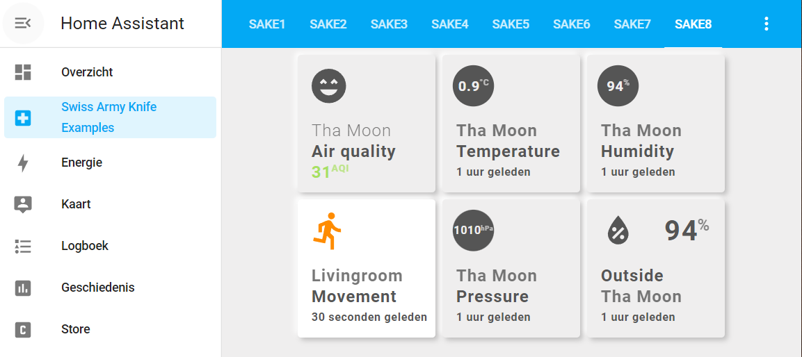

Installation
The installation can be done in two ways:
- automatic install using HACS
- manual install
On top of that you can install the examples using an extra dashboard.
Automatic install using HACS¶
By the time this card is released, it will become available in HACS.
Manual install (for Beta version)¶
The beta version expects the files to be using the following directory structure with their files.
If your structure differs, put the files into YOUR location, and don't forget to adjust the !include statements.
My Folder Structure¶
I use separate folders for many things in Home Assistant
Read and adapt to your own config and structure.
Below, as reference the folder structure I use
homeassistant-data/
.
├─ lovelace/
├─ themes/
├─ www/
│
└─ configuration.yaml
└─ ui-lovelace.yaml
└─ sak-examples-dashboard.yaml
My Lovelace folder contains the following folders:
lovelace/
.
├─ decluttering_templates
│ └─ decluttering_templates.yaml
│ └─ (etc)
│
├─ sak_templates/
│ └─ sak_templates.yaml
│ └─ sak-css-definitions.yaml
│ └─ user-css-definitions.yaml
│ └─ (etc)
│
├─ resources
│ └─ resources.yaml
│
├─ views/
│ └─ view-sake1.yaml
│ └─ (...)
│ └─ view-sake8.yaml
sak_templates folder in the lovelace folder is MANDATORY!"
This location is hard-coded into the SAK card. SAK needs the templates to function!
www/
.
├─ community/
│ └─ wip-swiss-army-knife-card/
│ └─ dev-swiss-army-knife-card.js
│
├─ images/
├─ backgrounds/
│ └─ balls-background-1.svg # Used by view-sake6.yaml
│
├─ weather/ # Used by all weather-type usersvg tools
│ └─ *-day.svg
│ └─ *-night.svg
│
└─ ic-face-1.svg # Used by Airvisual face display usersvg tools
└─ (...)
└─ ic-face-6.svg
themes/
.
└─ themes.yaml
└─ nm-01-gonsboro.yaml
└─ nm-03-dark-steelblue.yaml
Step 1: Add Swiss Army Knife Card to your installation¶
The folder has a wip prefix and the card itself a dev prefix. These will be removed in the official release. This way they can't overwrite each other...
Step 1a:
Put the card into the community (HACS) folder.
www/
.
├─ community/
│ └─ wip-swiss-army-knife-card/
│ └─ dev-swiss-army-knife-card.js
Step 1b:
Add the card to the resources.yaml file.
- url: /hacsfiles/wip-swiss-army-knife-card/dev-swiss-army-knife-card.js
type: module
resources.yaml file should be included in your configuration.yaml config. I assume that that is already in place if you're using custom cards.
lovelace:
mode: yaml
resources: !include lovelace/resources/resources.yaml
I have a YAML only config. Pleas adjust to your own configuration
Step 2: Add Swiss Army Knife templates¶
The second step is to add the sak_templates. These are mandatory.
Step 2a:
Add the SAK templates to the sak_templates folder.
Create the sak_templates folder in the lovelace folder and add all the files.
lovelace/
.
├─ sak_templates/
│ └─ sak_templates.yaml
│ └─ sak-css-definitions.yaml
│ └─ user-css-definitions.yaml
│ └─ (etc)
Step 2b:
Include sak_templates to ui-lovelace.yaml
# Swiss Army Knife Templates
sak_templates:
!include lovelace/sak_templates/sak_templates.yaml
The supplied sak_templates.yaml file contains the templates for SAK.
You don't have to change this file!
You made it!¶
If this is all you want, you're ready to use the Swiss Army Knife card. If not, continue with the next paragraph for the example dashboard install.
Examples dashboard install¶
If you want to use the examples, you need the full install that includes the example views, decluttering templates, backgrounds and weather and Airvisual images. And last but not least: the used gonsboro and dark steelblue themes in the examples.
Check my folder structure to understand my setup
So you can adapt it to yours if different.
Step 1: Add decluttering templates¶
Step 1a:
Install the decluttering card first, if you haven't installed it yet
Use HACS to install the decluttering card.
Then you should have the following in your ui-lovelace.yaml file:
# Decluttering Templates
decluttering_templates:
!include lovelace/decluttering_templates/decluttering_templates.yaml
The supplied decluttering_templates.yaml file contains the templates for SAK.
If you already use the decluttering card, merge the files.
Step 2: Add themes¶
Both themes are used by the examples, so include the themes into your themes.yaml file in the themes folder:
NM - Gonsboro:
!include nm-01-gonsboro.yaml
NM - Dark Steelblue:
!include nm-03-dark-steelblue.yaml
And the themes.yaml file should (already) be included into your Home Assistant config:
# frontend
# ========
# Enables the frontend to define themes
# - https://www.home-assistant.io/integrations/frontend/#defining-themes
frontend:
themes: !include themes/themes.yaml
Step 3: Add SAK examples dashboard¶
The Swiss Army Knife examples have their own dashboard. This way using them doesn't interfere with you running installation. You can access the examples from the side panel.
Step 3a: Add the external images used by the views to your configuration
www/
.
└─ images/
├─ backgrounds/
│ └─ balls-background-1.svg # Used by view-sake6.yaml
│
├─ weather/ # Used by all weather-type usersvg tools
│ └─ *-day.svg
│ └─ *-night.svg
│
└─ ic-face-1.svg # Used by Airvisual face display usersvg tools
└─ (...)
└─ ic-face-6.svg
Step 3b:
Add sak-examples-dashboard.yaml in the root folder and include it into your configuration.yaml:
lovelace:
mode: yaml
resources: !include lovelace/resources/resources.yaml
dashboards:
sak-examples:
mode: yaml
filename: sak-examples-dashboard.yaml
title: Swiss Army Knife Examples
icon: mdi:hospital-box
show_in_sidebar: true
The dashboard contains the 8 example views:
# Decluttering Templates
decluttering_templates:
!include lovelace/decluttering_templates/decluttering_templates.yaml
# Swiss Army Knife Templates
sak_templates:
!include lovelace/sak_templates/sak_templates.yaml
title: Swiss Army Knife Examples
views:
# Swiss Army Knife example views...
- !include lovelace/views/view-sake1.yaml
- !include lovelace/views/view-sake2.yaml
- !include lovelace/views/view-sake3.yaml
- !include lovelace/views/view-sake4.yaml
- !include lovelace/views/view-sake5.yaml
- !include lovelace/views/view-sake6.yaml
- !include lovelace/views/view-sake7.yaml
- !include lovelace/views/view-sake8.yaml
The views themselves reference the gonsboro and dark steelblue themes, you can keep your existing theme
You don't have to switch to the gonsboro or dark steelblue theme for your installation to see the examples "as the creator meant them to be seen", so your existing views stay the same.
Step 3c: Restart Home Assistant to have the dashboard installed
Make sure to validate your config before you restart Home Assistant 
You made it again!¶
Now enjoy the examples and don't forget that you have to replace my entities with yours to see the cards as intended!

You see example 8 with its gonsboro theme, while the rest of the installation uses the default Home Assistant theme.